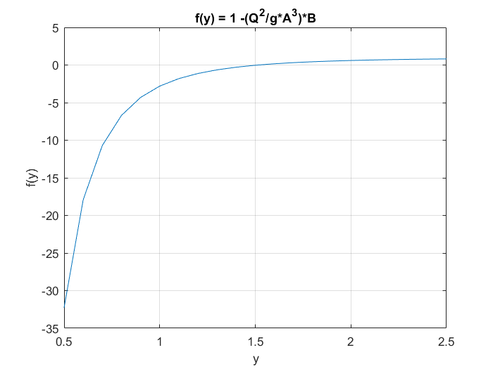
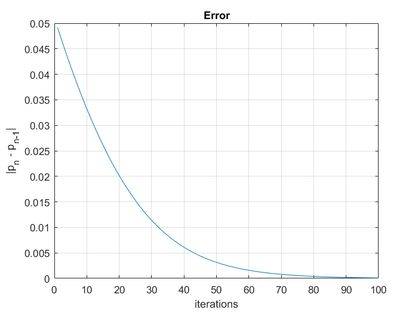

Contents
Function defination
Q = 20; g = 9.81;
A = @(y) 3*y + y^2/2;
B = @(y) 3 + y;
f = @(y) 1 -(Q^2/(g*(A(y)^3)))*B(y);
a=0.5; b=2.5;
Plotting graph of f(y)
X = a:0.1:b;
Y = a:0.1:b;
n = 1;
for x = a:0.1:b
Y(n) = f(x);
n = n + 1;
end
plot(X,Y); grid on;
xlabel("y");
ylabel("f(y)");
title("f(y) = 1 -({Q^2}/{g*A^3})*B")

Stopping criterium
TOL=10^(-6);
format long;
old = b;
fa = feval(f,a);
fb = feval(f,b);
Nmax = 100;
Iteration scheme
pvalues=[]; flag =0;
for i = 1 : Nmax
new = b - fb * ( b - a ) / ( fb - fa );
fnew = feval(f,new);
fprintf ( '\t\t %3d \t (%.10f,%.10f) \t %.10f \n', i, a, b, new )
if ( abs(new-old) < TOL )
flag=1;
break
elseif ( fa * fnew < 0 )
b = new;
fb = fnew;
else
a = new;
fa = fnew;
end
error(i) = abs(new-old);
old = new;
pvalues = [pvalues;old];
end
1 (0.5000000000,2.5000000000) 2.4508314769
2 (0.5000000000,2.4508314769) 2.4036291706
3 (0.5000000000,2.4036291706) 2.3583419190
4 (0.5000000000,2.3583419190) 2.3149191727
5 (0.5000000000,2.3149191727) 2.2733109175
6 (0.5000000000,2.2733109175) 2.2334676049
7 (0.5000000000,2.2334676049) 2.1953400929
8 (0.5000000000,2.1953400929) 2.1588795962
9 (0.5000000000,2.1588795962) 2.1240376472
10 (0.5000000000,2.1240376472) 2.0907660677
11 (0.5000000000,2.0907660677) 2.0590169517
12 (0.5000000000,2.0590169517) 2.0287426587
13 (0.5000000000,2.0287426587) 1.9998958179
14 (0.5000000000,1.9998958179) 1.9724293424
15 (0.5000000000,1.9724293424) 1.9462964529
16 (0.5000000000,1.9462964529) 1.9214507099
17 (0.5000000000,1.9214507099) 1.8978460542
18 (0.5000000000,1.8978460542) 1.8754368537
19 (0.5000000000,1.8754368537) 1.8541779556
20 (0.5000000000,1.8541779556) 1.8340247435
21 (0.5000000000,1.8340247435) 1.8149331968
22 (0.5000000000,1.8149331968) 1.7968599526
23 (0.5000000000,1.7968599526) 1.7797623671
24 (0.5000000000,1.7797623671) 1.7635985779
25 (0.5000000000,1.7635985779) 1.7483275630
26 (0.5000000000,1.7483275630) 1.7339091977
27 (0.5000000000,1.7339091977) 1.7203043082
28 (0.5000000000,1.7203043082) 1.7074747200
29 (0.5000000000,1.7074747200) 1.6953833021
30 (0.5000000000,1.6953833021) 1.6839940055
31 (0.5000000000,1.6839940055) 1.6732718953
32 (0.5000000000,1.6732718953) 1.6631831780
33 (0.5000000000,1.6631831780) 1.6536952215
34 (0.5000000000,1.6536952215) 1.6447765697
35 (0.5000000000,1.6447765697) 1.6363969518
36 (0.5000000000,1.6363969518) 1.6285272841
37 (0.5000000000,1.6285272841) 1.6211396688
38 (0.5000000000,1.6211396688) 1.6142073856
39 (0.5000000000,1.6142073856) 1.6077048800
40 (0.5000000000,1.6077048800) 1.6016077471
41 (0.5000000000,1.6016077471) 1.5958927111
42 (0.5000000000,1.5958927111) 1.5905376021
43 (0.5000000000,1.5905376021) 1.5855213296
44 (0.5000000000,1.5855213296) 1.5808238536
45 (0.5000000000,1.5808238536) 1.5764261538
46 (0.5000000000,1.5764261538) 1.5723101972
47 (0.5000000000,1.5723101972) 1.5684589036
48 (0.5000000000,1.5684589036) 1.5648561116
49 (0.5000000000,1.5648561116) 1.5614865425
50 (0.5000000000,1.5614865425) 1.5583357652
51 (0.5000000000,1.5583357652) 1.5553901595
52 (0.5000000000,1.5553901595) 1.5526368813
53 (0.5000000000,1.5526368813) 1.5500638265
54 (0.5000000000,1.5500638265) 1.5476595967
55 (0.5000000000,1.5476595967) 1.5454134645
56 (0.5000000000,1.5454134645) 1.5433153408
57 (0.5000000000,1.5433153408) 1.5413557415
58 (0.5000000000,1.5413557415) 1.5395257565
59 (0.5000000000,1.5395257565) 1.5378170192
60 (0.5000000000,1.5378170192) 1.5362216769
61 (0.5000000000,1.5362216769) 1.5347323625
62 (0.5000000000,1.5347323625) 1.5333421676
63 (0.5000000000,1.5333421676) 1.5320446161
64 (0.5000000000,1.5320446161) 1.5308336399
65 (0.5000000000,1.5308336399) 1.5297035546
66 (0.5000000000,1.5297035546) 1.5286490375
67 (0.5000000000,1.5286490375) 1.5276651054
68 (0.5000000000,1.5276651054) 1.5267470952
69 (0.5000000000,1.5267470952) 1.5258906436
70 (0.5000000000,1.5258906436) 1.5250916693
71 (0.5000000000,1.5250916693) 1.5243463557
72 (0.5000000000,1.5243463557) 1.5236511342
73 (0.5000000000,1.5236511342) 1.5230026691
74 (0.5000000000,1.5230026691) 1.5223978427
75 (0.5000000000,1.5223978427) 1.5218337418
76 (0.5000000000,1.5218337418) 1.5213076446
77 (0.5000000000,1.5213076446) 1.5208170085
78 (0.5000000000,1.5208170085) 1.5203594589
79 (0.5000000000,1.5203594589) 1.5199327779
80 (0.5000000000,1.5199327779) 1.5195348948
81 (0.5000000000,1.5195348948) 1.5191638761
82 (0.5000000000,1.5191638761) 1.5188179169
83 (0.5000000000,1.5188179169) 1.5184953323
84 (0.5000000000,1.5184953323) 1.5181945498
85 (0.5000000000,1.5181945498) 1.5179141017
86 (0.5000000000,1.5179141017) 1.5176526184
87 (0.5000000000,1.5176526184) 1.5174088219
88 (0.5000000000,1.5174088219) 1.5171815196
89 (0.5000000000,1.5171815196) 1.5169695990
90 (0.5000000000,1.5169695990) 1.5167720222
91 (0.5000000000,1.5167720222) 1.5165878207
92 (0.5000000000,1.5165878207) 1.5164160914
93 (0.5000000000,1.5164160914) 1.5162559917
94 (0.5000000000,1.5162559917) 1.5161067357
95 (0.5000000000,1.5161067357) 1.5159675903
96 (0.5000000000,1.5159675903) 1.5158378720
97 (0.5000000000,1.5158378720) 1.5157169431
98 (0.5000000000,1.5157169431) 1.5156042091
99 (0.5000000000,1.5156042091) 1.5154991154
100 (0.5000000000,1.5154991154) 1.5154011449
Error plot "p_n - p_{n-1}"
figure; plot([1:i], error); grid on;
xlabel("iterations"); ylabel("|p_n - p_{n-1}|");
title("Error")

Printing results
fprintf('The approximate root is %.10f',new)
if flag == 0
disp(' Maximum number of iterations exceeded')
end
The approximate root is 1.5154011449 Maximum number of iterations exceeded